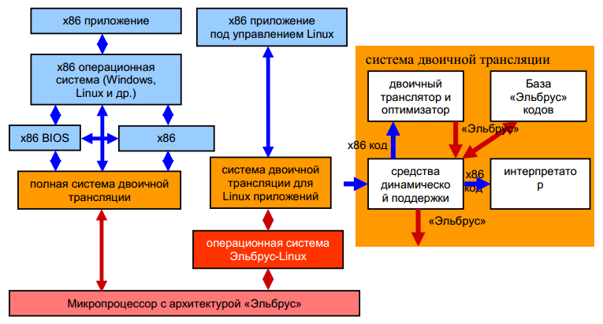
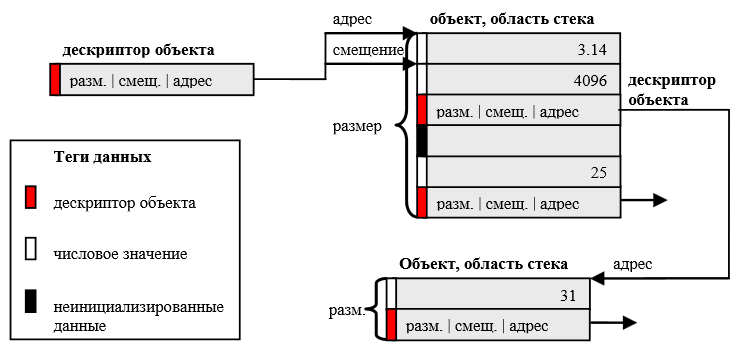
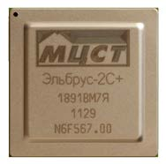
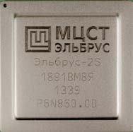
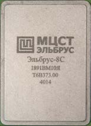

Российские технологии Эльбрус
для персональных компьютеров,
серверов и суперкомпьютеров
Ким А.К., Бычков И.Н., Волконский В.Ю., Воробушков В.В., Груздов Ф.А., Михайлов М.С., Ней-ман-заде М.И., Парахин Ю.Н., Семенихин С.В., Слесарев М.В., Фельдман В.М., ОАО «ИНЭУМим. И.С. Брука»
Ключевые проблемы современной ИТ индустрии
Развитие информационных технологий в значительной степени определяется темпами развития в таких ключевых областях, как микроэлектроника и программное обеспечение. Они характеризуются экспоненциальным ростом числа транзисторов в микропроцессорах и экспоненциальным ростом объема и сложности программного обеспечения.
Экспоненциальные рост числа транзисторов в микропроцессорах и ограничения по мощности требуют создания новых параллельных микропроцессорных архитектур, однако требования совместимости с существующим программным обеспечением, распространяемым в виде двоичных кодов для широко распространенных аппаратных платформ, сдерживают развитие архитектуры процессорного ядра. Как следствие, стремительно растущий аппаратный параллелизм используется разработчиками микропроцессоров для увеличения числа процессорных ядер и расширения векторных регистров.
Как показали исследования [1], практически все программы обладают огромным потенциалом параллелизма на уровне операций - от нескольких десятков до нескольких тысяч операций за такт. Этот вид параллелизма наиболее универсален, он может быть эффективно поддержан в аппаратуре и обнаружен автоматически (с помощью компиляторов) в существующих программах. Векторный параллелизм (операции над упакованными данными) также поддается аппаратно-программной оптимизации, но имеет ограниченное применение в программах. Параллелизм потоков управления значительно труднее поддается программной автоматизации и зачастую требует усилий программистов для явного распараллеливания программ. Таким образом, использование параллелизма на уровне операций является важнейшим методом повышения производительности процессорного ядра, вследствие чего повышается производительность многоядерных систем в целом, т.к. ускоряются вычисления на участках, не поддающихся другим видам распараллеливания.
Быстрый рост объема и сложности программного обеспечения характеризуется снижением его общей надежности из-за большого количества ошибок и уязвимостей. Например, размер дистрибутива Linux Debian c 2000 г. (Potato) по 2013 г. (Wheezy) вырос более чем в 9 раз по числу входящих в него пакетов и почти в 9 раз по размеру исходного кода, а надежность находится на уровне 1-5 ошибок на 1 тыс. строк кода. Последнее десятилетие характеризуется стремительным ростом киберпреступности и кибератак, что стало прямым следствием ошибок в программах, а также использованием существующих аппаратных архитектур, обладающих низким семантическим уровнем и не имеющих средств повышения надежности программ. Таким образом, вопросы безопасности и надежности программного обеспечения выходят на первый план на пути дальнейшего развития информационных технологий.
Решение всех перечисленных проблем возможно на базе технологий универсальных микропроцессоров с архитектурой «Эльбрус» [2-3]. Они обеспечивают высокую производительность процессорного ядра за счет параллельного исполнения операций при экономном энергопотреблении, обеспечивают полную и эффективную двоичную совместимость с самой распространенной в мире архитектурной платформой Intel x86, x86-64, а также предоставляют эффективные средства надежного программирования на базе аппаратно поддерживаемых защищенных вычислений. Благодаря этому микропроцессоры с архитектурой «Эльбрус» рассчитаны на широкий спектр применений, а их технологии постоянно совершенствуются и не уступают лучшим зарубежным аналогам.
Явное управление параллелизмом операций
Важнейшей особенностью архитектуры «Эльбрус» является явное указание процессорному ядру параллельно исполняемых операций, при этом анализ независимости и их планирование выполняет компилятор. Это позволяет отказаться от сложной и энергоемкой аппаратуры обеспечения внеочередного исполнения команд, используемой во всех современных универсальных микропроцессорах, и делает осмысленным расширение парка исполнительных устройств и повышение предельной производительности на такт до уровней, превосходящих возможности конкурирующих решений.
В первых 4-х поколениях микропроцессоров с архитектурой «Эльбрус», включая процессоры «Эльбрус-2С+» и «Эльбрус-4С», с помощью широкой команды на одном процессорном ядре в каждом такте можно запускать на исполнение: на ациклических участках кода до 16 операций, при выполнении циклов - до 23 операций, 8 64-разрядных вещественных операций. В микропроцессоре «Эльбрус-8С» уже можно запускать на исполнение до 25 операций и 12 64-разрядных вещественных операций.
Для снижения потерь от доступа за данными в память реализован аппаратно-программный механизм асинхронной предварительной подкачки данных в специальные буферные памяти. Специальные операции подготовки переходов обеспечивают возможность эффективно осуществлять переходы без использования предсказателя переходов. Аппаратура поддерживает средства (исполнение под управлением предикатов) программно-управляемого переупорядочивания операций и одновременного исполнения нескольких условных ветвей программы.
Наряду с параллелизмом на уровне операций в архитектуре «Эльбрус» реализован векторный параллелизм за счет операций над упакованными данными. Благодаря этому возможности выполнения 32разрядных вещественных операций на одном ядре возрастают в 2 раза и позволяют исполнять: на «Эльбрус-2С+» и «Эльбрус-4С» - до 16, а на микропроцессоре «Эльбрус-8С» - до 24 упакованных операций (Флопс). Упакованные операции реализованы также для целочисленных операций. Они находят применение в таких областях, как обработка сигналов, обработка изображений, графика и др. Во вновь разрабатываемых процессорах линии «Эльбрус» возможности выполнения упакованных операций удваиваются.
Микропроцессоры с архитектурой «Эльбрус» поддерживают и расширяют при переходе к новым поколениям параллелизм потоков управления на базе многоядерности. Кроме этого поддерживается параллелизм многопроцессорности на общей памяти с когерентными многоуровневыми кэш-памятями на базе неодинакового времени обращения к общей памяти (NUMA).
Все описанные механизмы параллельного исполнения эффективно поддержаны оптимизирующим компилятором [4], что позволяет автоматически получать коды, использующие мощное процессорное ядро и другие параллельные возможности архитектуры.
Технологии параллельного исполнения операций с использованием для этого оптимизирующего компилятора находят применение в развитии известных архитектур. Хотя в большинстве универсальных МП используется внеочередное аппаратное планирование потока операций, некоторые элементы планирования вычислений с помощью компилятора заложены в архитектуру Sparc64, начиная со Sparc64 VIIIfx - специального расширения архитектуры Sparc v9 для суперкомпьютеров. Как и в архитектуре «Эльбрус», в этой архитектуре используются большие регистровые файлы, а также возможность закодировать одновременную выборку сразу двух операций, с помощью которых оптимизирующему компилятору удается гораздо лучше распараллеливать вычисления, особенно в циклах.
Динамическая компиляция и оптимизация
Динамическая компиляция и оптимизация программ играет все более важную роль в процессе повышения эффективности и надежности, а также при обеспечении эффективной совместимости с существующими аппаратными платформами. Она особенно важна для архитектур с явным параллельным исполнением операций.

Рис. 1. Система двоичной совместимости в архитектуре «Эльбрус»
В микропроцессорах с архитектурой «Эльбрус» технология динамической компиляции и оптимизации, прежде всего, используется для обеспечения полной двоичной совместимости с архитектурой Intel x86, x86-64 и двоичной совместимости на уровне приложений под управлением операционной системы «Эльбрус», базирующейся на OS Linux (Рис.1) [5]. Эта система включает в себя несколько уровней динамических компиляторов. Простейшие шаблонные компиляторы генерируют не очень оптимальный код, но зато работают очень быстро. А самые высокие уровни системы динамической двоичной оптимизации полностью используют все параллельные возможности целевой архитектуры «Эльбрус».
За счет специальной аппаратной поддержки в режиме совместимости эффективно исполняются многопоточные двоичные приложения с соблюдением моделей памяти исходной аппаратной платформы (порядок обращений в память), и обеспечивается реализация точных и асинхронных аппаратных прерываний. Для снижения потерь от динамической компиляции, она выполняется параллельно с исполнением на отдельных ядрах многоядерной и многопроцессорной архитектуры «Эльбрус». Хорошо оптимизированные коды «горячих» регионов сохраняются в специальной базе кодов, что ускоряет повторное исполнение программ.
Динамическая оптимизация обладает также хорошими адаптивными свойствами. Она позволяет перекомпилировать регионы, в которых наблюдаются динамические события, негативно влияющие на производительность, и устранить причины возникновения таких событий. Это свойство динамической оптимизации используется в системе динамической компиляции для архитектуры «Эльбрус». Благодаря свойству адаптивности технология динамической компиляции использовалась компанией VMware на ранних этапах реализации систем виртуализации. Динамическая перекомпиляция привилегированного кода, который при исполнении в непривилегированном режиме вызывал много прерываний, позволяла существенно сократить их число и поднять эффективность системы виртуализации.
Примечательно использование системы динамической компиляции оптимизации в недавно объявленном микропроцессоре Denver, созданном в компании Nvidia. Этот микропроцессор реализует систему команд ARM v.8, т.е. 64-разрядную архитектуру, которую предполагается использовать, в том числе, и в области энергоэффективных серверов и суперкомпьютеров. В самом начале исполнения программы исходный ARM код аппаратно преобразуется во внутренние команды. При этом выполняются не более двух операций за такт, но собирается информация о передачах управления в программе. В случае, когда исполнение какого-то участка кода достигает некоторого порогового значения, аппаратно вызывается динамический двоичный компилятор, который оптимизирует и сохраняет микрокод соответствующего региона, используя возможность запускать до семи внутренних операций за такт за счет явного управления параллелизмом в микрокоде. Приводятся данные, что на работу неоптимизированного кода и самой динамической компиляции затрачивается всего только 3% общего времени исполнения. А на вещественных приложениях микропроцессор Denver работает быстрее, чем предназначенный для работы в том же энергоэффективном сегменте микропроцессор последнего поколения Haswell от компании Intel. Технология, реализованная в микропроцессоре Denver, очень похожа на технологию, реализованную в микропроцессорах с архитектурой «Эльбрус». Отличие заключается в том, что в микропроцессорах линии «Эльбрус» используется более широкая команда, позволяющая исполнять за такт существенно больше операций.
Динамическая компиляция и оптимизация находит применение при реализации программ, требующих хорошей адаптации к конкретным аппаратным особенностям и ресурсам. В области суперкомпьютеров динамическая компиляция используется в технологии OpenCL, которая используется для оптимизации программ, как для графических, так и для универсальных процессоров. Для этого отдельные, наиболее вычислительно емкие ядра программ реализуются на языке OpenCL C, компилируются в промежуточный язык, например, LLVM, а при запуске программы на исполнение компилируются из промежуточного представления в код конкретной аппаратной платформы. Аналогичный подход применяется для оптимизации библиотеки OpenGL. Эта технология позволяет максимально эффективно использовать все параллельные возможности целевой аппаратной платформы, включая средства векторизации и многопоточного исполнения.
В системе программирования архитектуры «Эльбрус» с самого начала ее разработки была заложена возможность сохранения программы не только в виде двоичного кода, но и в виде промежуточного представления, семантически близкого к языку C. Промежуточное представление программ для архитектуры «Эльбрус» EIR (Elbrus Intermediate Representation) было разработано до появления промежуточного представления LLVM, но они обладают значительным сходством. Это, в частности, позволило разработчикам компилятора для архитектуры «Эльбрус» оптимизировать шейдеры, реализованные в OpenGL с помощью библиотеки LLVMpipe и ускорить исполнение трехмерной графики в 3 раза.
Для повышения надежности программ часто используются безопасные языки, такие как Java и C#. Реализация этих языков осуществляется с помощью виртуальной машины, которая включает динамические средства контроля типов и целостности объектов при выполнении программы. Поскольку виртуальные машины не имеют непосредственной реализации на современных аппаратных платформах, программы на Java и C# исполняются с помощью интерпретаторов, а для повышения эффективности исполнения используются динамические компиляторы и оптимизаторы. На микропроцессорах с архитектурой «Эльбрус» реализована виртуальная машина языка Java OpenJDK, в которой работает динамический компилятор, оптимизируя Java bytecode в параллельные команды микропроцессора.
Технология защищенного исполнения программ
В архитектуре «Эльбрус» реализована не имеющие аналогов в мире технология защищенного исполнения программ, которая позволяет эффективно использовать языки программирования C и C++ и обеспечивают уровень надежности, не уступающий языкам Java и C#. Это достигается за счет теговой архитектуры, структурированной памяти на базе дескрипторов и контекстной защиты, обеспечивающей языковые принципы ограничения областей видимости данных (Рис.2).
|
 Рис. 2. Тегированная память в архитектуре «Эльбрус» |
С помощью тегов задается информация о типах данных, используемых программой. При этом аппаратно поддерживаются только несколько, наиболее важных с точки зрения надежности типов данных: неинициализированные данные, числовые данные и указатели на данные (дескрипторы, описывающие объекты, на которые смотрят указатели). Благодаря этому теги не занимают много места (2 бита на 32разрядное слово в памяти) и хранятся в памяти в кодах коррекции (ECC). Контроль числовых типов данных возлагается на компиляторы.
Благодаря наличию тегов и дескрипторов память исполняемой программы становится структурированной, т. е. наполненной содержательными объектами и данными, а не просто набором байтов, как во всех современных микропроцессорных архитектурах. Это существенно повышает семантический уровень архитектуры «Эльбрус».
Семантический уровень архитектуры «Эльбрус» дополнительно повышается в направлении языков программирования за счет средств контекстной защиты, реализованных на аппаратном уровне. Контекстная защита при исполнении любой функции (метода) обеспечивает доступ только к тем данным, которые прямо или косвенно доступны ей (ему) средствами языка. Обычно это данные, расположенные в области видимости функции (метода). Для функции языка C - это глобальные данные единицы компиляции (модуля), параметры и локальные данные самой функции. При этом глобальные данные модуля состоят из собственных данных модуля, доступных только его функциям, интерфейсных данных модуля, видимых из функций других модулей, и ссылок на интерфейсные данные других модулей. При вызове из функции одного модуля функции другого модуля аппаратно и атомарно происходит смена контекста, в результате чего вызванной функции становятся доступны ее глобальные данные, но глобальные данные вызывающей функции становятся не доступными. Контекстная защита для языка С++ работает аналогичным образом [6].
Эффективность реализации технологии защищенного исполнения программ обеспечивается на аппаратном уровне, т.к. контроль типов и проверки нарушения границ объектов, необходимые при обращениях в память через указатели, выполняются параллельно с выполнением соответствующих операций и не замедляют исполнение программы.
Технология защищенного исполнения программ поддерживается компонентами системы программирования (компиляторы и средства сборки), а также операционной системой. Средствами операционной системы создаются объекты в памяти и на них формируются дескрипторы (аппаратура не позволяет сконструировать дескриптор из частей в программе пользователя), а кроме этого обеспечивается контроль обращений к уничтоженным объектам по зависшим указателям.
Технология защищенного исполнения позволяет создавать надежное, хорошо отлаженное программное обеспечение большими коллективами разработчиков. Кроме этого исполнение программ в этом режима надежно защищает их от проникновения компьютерных вирусов. Чаще всего вирусы проникают, используя для этого ошибки в системном программном обеспечении, но, как правило, для передачи управления используется неконтролируемое на всех существующих аппаратных системах переполнение буфера. Благодаря наличию тегов, дескрипторов и контекстной защиты на архитектуре «Эльбрус» такой способ проникновения просто не возможен. Это позволяет безопасно включать в программы, работающие на платформе «Эльбрус», встроенные модули (plug-in), которые работают в виртуальной памяти приложения и на обычных аппаратных системах делают их уязвимыми.
Хотя в мире предпринималось много попыток создать более надежные аппаратные архитектуры, они не увенчались успехом, т.к. в самом начале для реализации принимались неверные решения, в дальнейшем мешали вопросы совместимости. Тем не менее, попытки создать надежную архитектуру продолжаются. В частности, абсолютно новым путем пытаются идти разработчики проекта CRUSH-SAFE , поддерживаемого агентством DARPA. Основной целью проекта является создание надежных вычислительных систем. Для этого предлагается аппаратная архитектура, в которой 64-разнядные данные защищаются 64-разрядными тегами, обращение к данным осуществляется через дескрипторы, выполняется динамический контроль типов и считается, что ради достижения высокой надежности можно пожертвовать производительность и совместимостью. В отличие от технологий архитектуры «Эльбрус» предлагаемая система ориентируется на абсолютно новые языки программирования, для нее должна использоваться новая операционная система и специальная аппаратура. Этот проект находится в начальной стадии по сравнению с хорошо проработанной и требующей массового внедрения технологией защищенного исполнения программ в архитектуре «Эльбрус».
Современные микропроцессоры линии «Эльбрус»
Начиная с 2007 г. разработано 5 поколений микропроцессоров с архитектурой «Эльбрус», причем 3 последних микропроцессора, «Эль- брус-2С+», «Эльбрус-4С» и «Эльбрус-8С», реализованы как многоядерные системы на кристалле (рис.3). Они используются для создания встраиваемых модулей, серверных модулей, серверов и автоматизированных рабочих мест.
|
 2 ядра «Эльбрус» 4 DSP ядра Мультикор 368 млн. транзисторов 90 нм 500 МГц 28(16+12) Гфлопс 25 Вт 2011 г. выпуска |
 4 ядра «Эльбрус» 986 млн. транзисторов 65 нм 800-950 МГц 50-60 Гфлопс 45-55 Вт 2013г. выпуска |
 8 ядер «Эльбрус» 2,7 млрд. транзисторов 28 нм 1300 МГц 250 Гфлопс 75-90 Вт 2014 г. 1-я итерация 2015 г. выпуск |
Рис. 3. Многоядерные микропроцессоры линии Эльбрус
С 2011 г. выпускается 6-ядерный гетерогенный микропроцессор (СнК) «Эльбрус-2С+» (2 универсальных ядра «Эльбрус» и 4 ядра DSP с архитектурой Мультикор) производительностью 28 Гфлопс (16 Гфлопс - на универсальных ядрах и 12 Гфлопс - на ядрах DSP) [7]. Однопроцессорные модули на базе микропроцессора «Эльбрус-2С+» используются в стационарных и переносимых автоматизированных рабочих местах, двухпроцессорные - во встраиваемых системах, а четырехпроцессорные - для создания серверных модулей и серверов на их основе.
С конца 2013 г. выпускаются 4-ядерные микропроцессор «Эльбрус- 4С» с тактовой частотой 0,8-1,0 ГГц, с производительностью 50-64 Гфлопс, изготавливаемые по технологическим нормам 65 нм. На базе этих микропроцессоров разработаны однопроцессорное автоматизированное рабочее место в стандартном форм-факторе персонального компьютера и 4-процессорные серверные модули, работающие на общей памяти. На базе этих модулей в 2015 г. изготавливается сервер (одна стойка 47U) с производительностью 13,8 Тфлопс (60 модулей 1U). Средства коммуникации позволят в дальнейшем использовать данный сервер как узел для создания суперкомпьютера с производительностью в сотни Тфлопс.
Для создания вычислительных систем на базе российских микропроцессоров в 2010 г. на технологии 130 нм был разработан контроллер периферийных интерфейсов (КПИ) [8], который подключается к процессору через один или два дуплексных канала ввода-вывода с пропускной способностью 2+2 Гбайт/сек. КПИ поддерживает работу со следующими интерфейсами внешних устройств и шин: SATA, PCI, PCI Express x8, Ethernet 10/100/1000 Mbps, IDE, IEEE1284/RS-232/RS-485, USB 2.0, AC-97/GPIO, IOAPIC/PIC/I2C/SPI/Timer. Для возможности работать с более современными интерфейсами в 2015 г. завершается разработка контроллер КПИ-2. Первая итерация этого контроллера, спроектированного на технологии 65 нм, изготовлена в октябре 2014 г. КПИ- 2 будет взаимодействовать с процессорами через более мощные каналы PCI Express.
В октябре 2014 г. изготовлена 1-я итерация 8-ядерных микропроцессор «Эльбрус-8С» по технологическим нормам 28 нм (завершение разработки в 2015 г.). Эти микропроцессоры рассчитаны на частоту 1,3 ГГц и производительность 250 Гфлопс. Эти, в 4 раза более производительные микропроцессоры (по сравнению с «Эльбрус-4С») можно использовать для создания однопроцессорных рабочих мест, четырехпроцессорных серверных модулей, мощных серверов и супер-ЭВМ петафлопсного класса.
В ноябре 2014 г. завершаются государственные испытания полностью российского микропроцессора «Эльбрус- 1С». Он изготовлен на российской фабрике (завод «Микрон») по технологическим нормам 90 нм. В 2015 г. завершается разработка гетерогенного микропроцессора (СнК) «Эльбрус-1С+», в котором кроме универсального ядра «Эльбрус» будет реализовано графическое ядро, поддерживающее 2D и 3D графику. Этот маломощный процессор (7 Вт), работающий на частоте 1 ГГ ц, предполагается использовать для создания мобильных устройств.
С 2014 г. ведется разработка 8-16-ядерного микропроцессора «Эльбрус-16С» (первая итерация в 2017 г., завершение разработки в 2018 г.) на технологии 28 нм производительностью свыше 512 Гфлопс. На базе этого МП можно изготавливать супер-ЭВМ производительностью до 10 петафлопс.
До 2020 г. запланирована разработка 32-ядерного МП с тактовой частотой до 2 ГГц с производительностью 2-4 Тфлопс на технологии 14 нм. На базе этого МП можно создать супер-ЭВМ с производительностью свыше 100 Pflops.
Программное обеспечение для архитектуры «Эльбрус»
Вычислительные комплексы на базе микропроцессоров с архитектурой «Эльбрус» оснащаются сертифицированным общим программным обеспечением (ОПО) «Эльбрус», включающим операционную систему (ОС) «Эльбрус», совместимую с ОС Linux, со средствами поддержки систем реального времени и средствами защиты от несанкционированного доступа. Средства разработки программ, написанных на языках высокого уровня Си, Си++, Фортран, Джава и др., обеспечивают эффективное распараллеливание на всех уровнях: параллелизм на уровне операций, векторный параллелизм, параллелизм потоков управления, параллелизм систем с распределенной памятью. Разработчикам программ предоставляются средства анализа производительности и распараллеливания программ (OpenMP, MPI). Данные производительности реальных задач, полученные на 16-ядерных модулях с МП «Эльбрус-4С», подтверждают эффективность МП с архитектурой «Эльбрус».
ОПО «Эльбрус» включает средства поддержки пользовательского интерфейса, комплекс сервисных и пользовательских программ (СУБД, средства работы с гипертекстом, офисные пакеты, электронную почту и проч.), графические библиотеки и пакеты, высокопроизводительные математические и мультимедийные библиотеки. Эти средства поддерживают все возможности архитектуры «Эльбрус» и отвечают современным требованиям, которые предъявляются к программным системам индивидуального и коллективного пользования. Нужно также отметить, что созданное ОПО «Эльбрус» работает не только на платформе «Эльбрус», но и на платформе Sparc (ЗАО «МЦСТ» выпускает процессоры с этой архитектурой), а также на платформе Intel x86, x86-64.
ОПО «Эльбрус» постоянно развивается. Ведется работа по обновлению дистрибутива операционной системы, который реализуется на базе Debian. Обновляется ядро операционной системы (ближайшая версия будет совместима с Linux 3.10), ведется реализация системы виртуализации (паравиртуализация на базе ядра ОС «Эльбрус»). Постоянно расширяется набор прикладных программ и пакетов, включаемых в дистрибутив. Оптимизирующие компиляторы развиваются в направлении динамической оптимизации и адаптации программ к аппаратным ресурсам. Система динамической двоичной компиляции развивается в направлении поддержки интерфейсов современных операционных систем с современным аппаратным окружением. Предполагается более активное внедрение системы защищенного исполнения программ.
Литература
1. Postiff M.A., Greene D.A., Tyson G.S., Mudge T.N. The Limits of Instruction Level Parallelism in SPEC95 Application // INTERACT-3 at ASPLOS-VIII, 1998.
2. Ким А.К. Российские универсальные микропроцессоры и вычислительные комплексы высокой производительности: результаты и взгляд в будущее. // Вопросы радиоэлектроники серия ЭВТ, выпуск 3, 2012. С. 5-13.
3. Ким А.К., Волконский В.Ю., Груздов Ф.А., Михайлов М.С., Парахин Ю.Н., Сахин Ю.Х., Семенихин С.В., Слесарев М.В., Фельдман В.М. Архитектурная линия «Эльбрус» сегодня: микропроцессоры, вычислительные комплексы, программное обеспечение, // Современные информационные технологии и ИТ-образование. Сборник докладов 7-й международной научнопрактической конференции, Москва, 6-9 декабря 2012. С.21-29.
4. Волконский В.Ю., Брегер А.В., Бучнев А.Ю., Грабежной А.В., Ермолицкий А.В., Муханов Л.Е., Нейман-заде М.И., Степанов П.А., Четверина О.А. Методы распараллеливания программ в оптимизирующем компиляторе. // Вопросы радиоэлектроники серия ЭВТ, выпуск 3, 2012. С. 63-88.
5. Воронов Н.В., Гимпельсон В.Д., Маслов М.В., Рыбаков А.А., Сюсюкалов Н.С. Система динамической двоичной трансляции х86->«Эльбрус». // Вопросы радиоэлектроники серия ЭВТ, выпуск 3, 2012. С.89-107.
6. Ким А.К., Волконский В.Ю., Груздов Ф.А., Сахин Ю.Х., Семенихин С.В. Защищенное исполнение программ на базе аппаратной и системной поддержки архитектуры «Эльбрус». // Современные информационные технологии и ИТ-образование. Сборник докладов 5-й международной научнопрактической конференции, Москва, 8-10 ноября 2010. С.22-39.
7. Исаев М.В., Кожин А.С., Костенко В.О., Поляков Н.Ю., Сахин Ю.Х. Двухядерная гетерогенная система на кристалле «Эльбрус-2С+». // Вопросы радиоэлектроники, сер. ЭВТ, 2012, вып. 3. С.42-52.
8. Ким А.К., Михайлов М.С., Фельдман В.М. Подсистема ввода-вывода для систем на кристалле «МЦСТ-4R» и «Эльбрус-S» на основе микросхемы контроллера периферийных интерфейсов. // Вопросы радиоэлектроники, сер. ЭВТ, 2012, вып. 3. С.52-62.